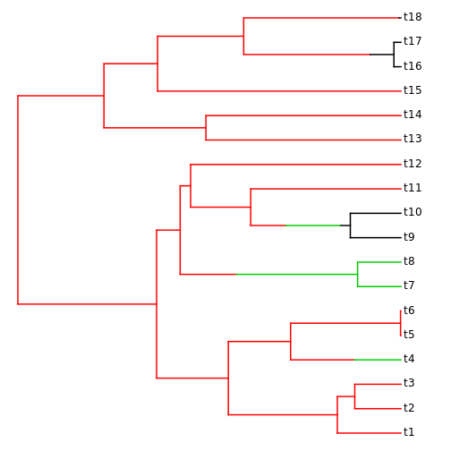

Extending NeXML: an example based on simmap
Carl Boettiger
Scott Chamberlain
Rutger Vos
Hilmar Lapp
Source:vignettes/simmap.Rmd
simmap.RmdExtending the NeXML standard through metadata annotation.
Here we illustrate this process using the example of stochastic character mapping (Huelsenbeck, Nielsen, and Bollback 2003). A stochastic character map is simply an annotation of the branches on a phylogeny, assigning each section of each branch to a particular “state” (typically of a morphological characteristic).
Bollback (2006) provides a widely used stand-alone software implementation of this method in the software simmap, which modified the standard Newick tree format to express this additional information. This can break compatibility with other software, and creates a format that cannot be interpreted without additional information describing this convention. By contrast, the NeXML extension is not only backwards compatible but contains a precise and machine-readable description of what it is encoding.
In this example, we illustrate how the additional information required to define a stochastic character mapping (a simmap mapping) in NeXML.
Revell (2012) describes the phytools package for R, which includes utilities for reading, manipulating, and writing simmap files in R. In this example, we also show how to define RNeXML functions that map the R representation used by Revell (an extension of the ape class) into the NeXML extension we have defined by using RNeXML functions.
Since a stochastic character map simply assigns different states to parts of a branch (or edge) on the phylogenetic tree, we can create a NeXML representation by annotating the edge elements with appropriate meta elements. These elements need to describe the character state being assigned and the duration (in terms of branch-length) that the edge spends in that state (Stochastic character maps are specific to time-calibrated or ultrametric trees).
NeXML already defines the characters element to handle discrete character traits (nex:char) and the states they can assume (nex:state). We will thus reuse the characters element for this purpose, referring to both the character trait and the states by the ids assigned to them in that element. (NeXML’s convention of referring to everything by id permits a single canonical definition of each term, making it clear where additional annotation belongs). For each edge, we need to indicate:
- That our annotation contains a stochastic character mapping reconstruction
- Since many reconstructions are possible for a single edge, we give each reconstruction an id
- We indicate for which character trait we are defining the reconstruction
- We then indicate which states the character assumes on that edge. For each state realized on the edge, that involves stating:
- the state assignment
- the duration (length of time) for which the edge spends in the given state
- the order in which the state changes happen (Though we could just assume state transitions are listed chronologically, NeXML suggests making all data explicit, rather than relying on the structure of the data file to convey information).
Thus the annotation for an edge that switches from state s2 to state s1 of character cr1 would be constructed like this:
m <- meta("simmap:reconstructions", children = c(
meta("simmap:reconstruction", children = c(
meta("simmap:char", "cr1"),
meta("simmap:stateChange", children = c(
meta("simmap:order", 1),
meta("simmap:length", "0.2030"),
meta("simmap:state", "s2"))),
meta("simmap:char", "cr1"),
meta("simmap:stateChange", children = c(
meta("simmap:order", 2),
meta("simmap:length", "0.0022"),
meta("simmap:state", "s1")))
))))Of course writing out such a definition manually becomes tedious quickly. Because these are just R commands, we can easily define a function that can loop over an assignment like this for each edge, extracting the appropriate order, length and state from an existing R object such as that provided in the phytools package.
Likewise, it is straightforward to define a function that reads this data using the RNeXML utilities and converts it back to the phytools package. The full implementation of this mapping can be seen in the simmap_to_nexml() and the nexml_to_simmap() functions provided in the RNeXML package.
As the code indicates, the key step is simply to define the data in meta elements. In so doing, we have defined a custom namespace, simmap, to hold our variables. This allows us to provide a URL with more detailed descriptions of what each of these elements mean:
nex <- add_namespaces(c(simmap = "https://github.com/ropensci/RNeXML/tree/master/inst/simmap.md"))At that URL we have posted a simple description of each term.
Using this convention we can generate NeXML files containing simmap data, read those files into R, and convert them back into the phytools package format. These simple functions serve as further illustration of how RNeXML can be used to extend the NeXML standard. We illustrate their use briefly here, starting with loading a nexml object containing a simmap reconstruction into R:
f <- system.file("examples", "simmap_ex.xml", package = "RNeXML")
simmap_ex <- read.nexml(f)The get_trees() function can be used to return an ape::phylo tree as usual. RNeXML automatically detects the simmap reconstruction data and returns includes this in a maps element of the ape::phylo object, for use with other phytools functions.
phy <- nexml_to_simmap(simmap_ex)We can then use various functions from phytools designed for simmap objects (Revell 2012), such as the plotting function:
library("phytools")
plotSimmap(phy)no colors provided. using the following legend:
A B C
"black" "red" "green3" 
Stochastic character mapping on a phylogeny, as generated by the phytools package after parsing the simmap-extended NeXML.
Likewise, we can convert the object back in the NeXML format and write it out to file to be read by other users.
nex <- simmap_to_nexml(phy)
nexml_write(nex, "simmap.xml")[1] "simmap.xml"Though other NeXML parsers (for instance, for Perl or Python) have not been written explicitly to express simmap data, those parsers will nonetheless be able to successfully parse this file and expose the simmap data to the user.
Bollback, JonathanP. 2006. BMC Bioinformatics 7 (1): 88. https://doi.org/10.1186/1471-2105-7-88.
Huelsenbeck, John P., Rasmus Nielsen, and Jonathan P. Bollback. 2003. “Stochastic Mapping of Morphological Characters.” Systematic Biology 52 (2): 131–58. https://doi.org/10.1080/10635150390192780.
Revell, Liam J. 2012. “Phytools: An R Package for Phylogenetic Comparative Biology (and Other Things).” Methods in Ecology and Evolution 3: 217–23.